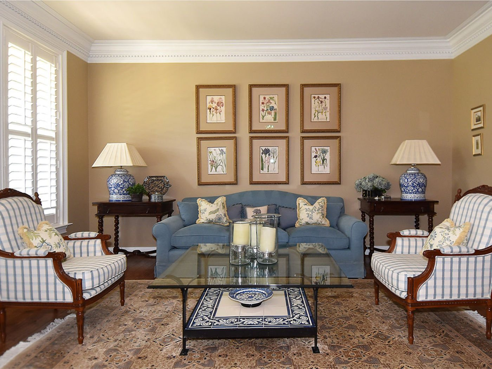
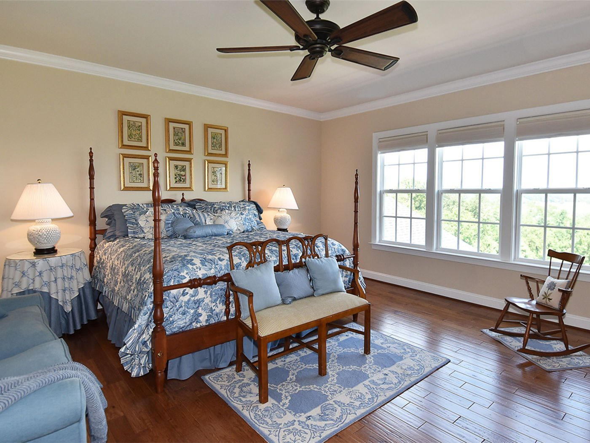
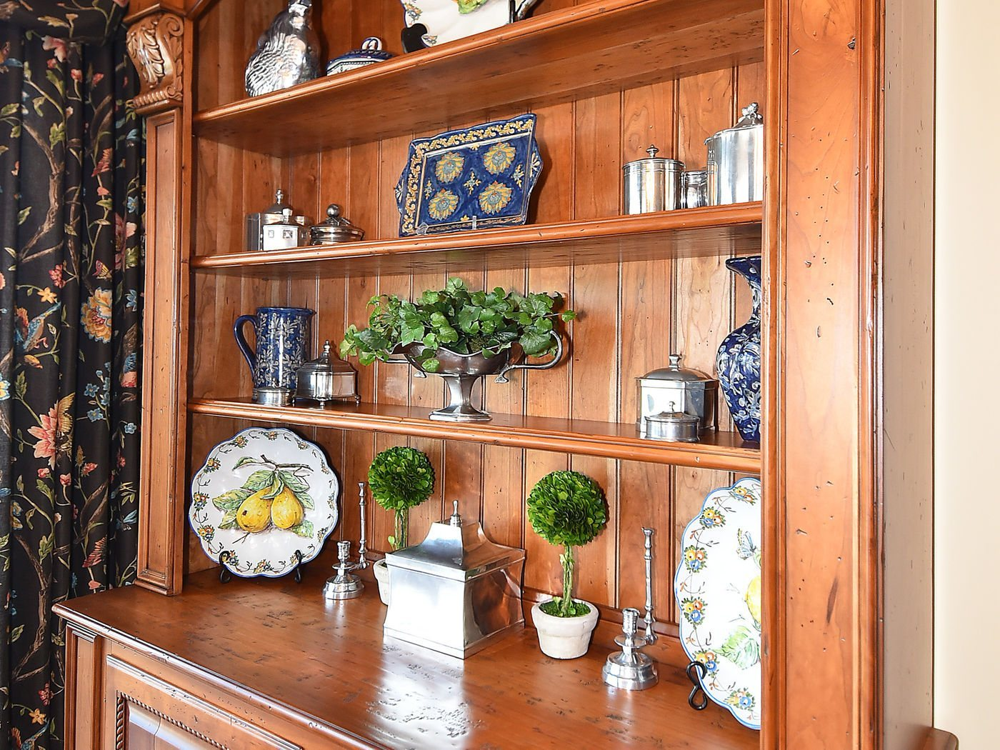
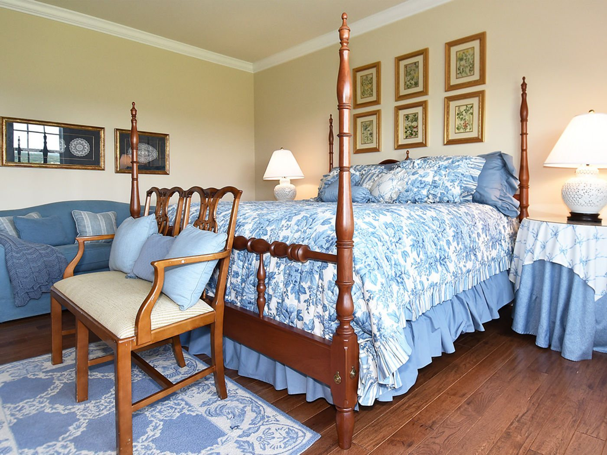
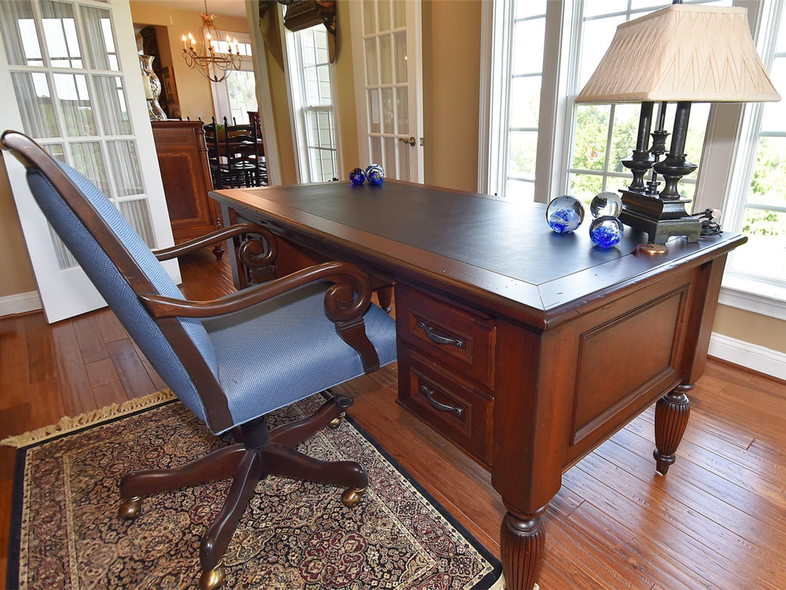

Traditional through and through — and the clearest example of what “Beyond the Mill” actually means: millwork drawn, detailed, and built for the room it lives in.
The home office is the centrepiece. Floor-to-ceiling cherry cabinetry was designed around how the room is actually used, then drawn in elevation and built by hand — the drawing and the finished piece are shown side by side in the gallery below.
Elsewhere the house keeps its formal character: a dining room dressed in pattern with a built-in china cabinet, a living room arranged with classic symmetry, and a primary bedroom layered in soft blues around a four-poster bed.






